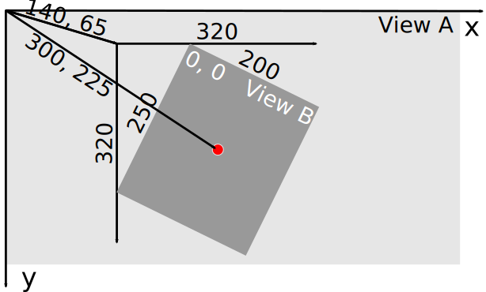

Views¶
Views is a UIView subclass and it represents a rectangular Area on
the screen.
a View can have on superview
a View can have many subviews
UIWindow is the very top of the view hierarchy (it even includes the
status bar). But normally you never interact with it.
Top View is a property of the Program called:
var view: UIView
Initializing UIView¶
init(frame: CGRect) // init of UIView created in code
init(coder: NSCoder) // init of UIView comes out of storyboard
If you need an initializer set them both
func setup() {...}
override init(frame:CGRect) { // a designated init
super.init(frame: frame)
setup()
}
required init(coder aDecoder: NsCoder) { // a required init
super.init(coder: aDecoder)
setup()
}
View’s Coordinate System¶
Origin = upper left
Units are points (not pixels)
One point can have multiple pixels
var contentSacleFactor: CGFloat // get number of pixels per point
Boundaries is where drawings happen
var bounds: CGRect // a vies internal drawing space's origin and size
The UIView location
var center: CGPoint // center of a UIView in its superview's coordinate system
var frame : CGRect // the rect containing a UIview in its superview's coordinate system
Bounds vs Frame 
View B's bounds = ( (0 ,0) , (250,200) )
View B's frame = ( (140,65), (320,320) )
View B's center = ( 300,225 )
View B's middle = (bounds.midX, bounds.midY) = (100,125)
Creating a View¶
In Stroyboard
Drag UIView into storyboard
User
Identity Inspectorto changes it’s class to your sublcass
In Code Assuming this code is in the UIViewController
let labelRect = CGRect(x: 20, y:20 , width: 100, height:50)
let label = UILabel(frame: labelRect) // UILabel is a sublcass of UIView
label.text = "Hello"
view.addSubview(label)
View transparency¶
Layers are defined in th order they are in the subviews list
First in the list are the lower layers
Later in the list are on Top
Transparency is not cheap
Hide a view¶
A hidden view don’t receive touch inputs or events and can draw nothing on screen
var hidden: Bool
Custom View¶
Used when
Draw some custom drawing on screen
If touch events need to be handeled differently
To create just create a UIView subclass and override drawRect.
override func drawRect(regionThatNeedsToBeDrawn: CGRect)
Never call drawRect, if a View needs to be redraw use:
setNeedsDisplay()
setNeedsDisplayinRect(regionThatNeedsToBeDrawn: CGRect)
Drawing¶
Drawing Text¶
Usually UILabel is used to put text on screen
To draw in drawRect use NSAttributedString or
NSMutableAttributedString
// Immutable
let text = NSAttributedString("Hello")
text.drawAtPoint(aCGPoint)
let textSize: CGSize = text.size // space used for the string
// Mutable
let mutableText = NSMutableAttributedString("some String")
// Set Attributes
func setAttributes(attributes: Dictionary, range: NSRange)
func addAttributes(attributes: Dictionary, range: NSRange)
NSForegroundColorAttributeName : UIColor
NSStrokeWidthAttributeName: CGFloat
NSFontAttributeNAme : UIFont
Drawing Images¶
``UIImage`` object
let image: UIImage? = UIImage(named: "foo")
Images are added in the project in
Images.xcassetsfileImages can have different resolutions for different devices (all managed by Images.xcassets)
From the file system
let image: UIImage? = UIImage(contentOfFile: aString)
let image: UIImage? = UIImage(data: anNSData) // raw .jpg, .png, .tiff, ...
Drawing image on screen
image.drawAtPoint(aCGPoint) // upper left of the image put at aCGPoint
image.drawInRect(aCGPoint) // scales image to fit aCGRect
image.drawAsPAtternInRect(aCGPoint) // tiles the image into aCGRect
Bound change UIViewContentMode¶
Bound can change if the device is rotated etc.
By default there is no redraw
Content and images are getting streched
Can be changed in the
UIViewproperty
var contentMode: UIViewContentMode
// Don't scale to view but place it somewhere else
.Left/.Right/.Top/.Bottom/.TopRight/.BottomRight/.BottomLeft/.Center
// Scale view
.ScaleToFit/.ScaleAspectFill/.ScaleAspectFit // scale to fill is the default
// Redraw by calling drawRect again
.Redraw // This is the one you should use
UIBezierPath¶
// Create
let path = UIBezierPath()
// Move, add line or arcs to the path
path.moveToPoint(CGPoint(80,50)) // assume screen is 160x250
path.addLineToPoint(CGPoint(140,150))
path.addLineToPoint(CGPoint(10,150))
// Close path to start point
path.closePath()
// Set attributes and stroke / fill
UIColor.greenColor().setFill() // method of UIColor
UIColor.redColor().setStroke() // method of UIColor
path.linewidth = 3.0 // property in UIBezierPath
path.fill()
path.stroke()
Other shapes
let roundRect = UIBezierPath(roundedRect: aCGRect, cornerRadius: aCGFloat)
let oval = UIBezierPath(ovelInRect: aCGRect)
// ... and others
Clipping
addClip()
HitDetection For HitDetection a path must be closed
func containsPoint(CGPoint) -> Bool // tells whether a point is inside a path
UIColor¶
// Colors can also b RGB, HSB or even a pattern (using UIImage)
let green = UIColor.greenColor()
// Background Color
var backgroundColor : UIView
// Colors can have alpha (transparency)
let transparentYellow = UIColor.yellowColor().colorwithAlphaComponent(0.5)
// 0.0 = fully transparent 1.0 = fully opaque
// Transparency must be enabled in the UIView
var opaque = false
// Entire UIView transparent
var alpha: CGFloat
UIFont¶
class func preferredFontForTextStyle(UIFontTextStyle) -> UIFont
UIFontTextStyle.Headline
UIFontTextStyle.Body
UIFontTextStyle.Footnote
System Font
Not used for user content
class func systemFontOfSize(pointSize: CGFloat) -> UIFont
class func boldsystemFontOfSize(pointSize: CGFloat) -> UIFont
Coordinate System¶
Data Structures¶
// CGFloat never user double or float for coordinated
let cfg = CGFloat(aDouble)
// CFPoint = two CFFloats in x and y
var point = CGPointer(x: 37.0, y: 55.2)
point.y -= 30
point.x += 20.0
// CGSize = struct with two CGFloats in width and height
var size = CGSize(width: 100.0, height: 50.0)
size.width += 42.5
size.height += 75
// CGRect = CGPoint and CGSize
struct CGRect {
var origin: CGPoint
var size : CGSize
}
let rect = CGRect(origin: aCGPoint, size: aCGSize)
// Other CGRect properties and methods
var minx: CGFloat // left edge
var midY: CGFloat // midpoint vertically
intersects(CGRect) -> Bool // does CGRect intersect with otehr one?
intersect(CGRect) // clip the CGRect to the intersection wit hthe other one
contains(CGPoint) -> Bool // does CGRect contain the given CGPoint?
//.. and many more
Connection to storyboard¶
The @keywords are making connection to the storyboard
import UIKit
@IBDesignable // live view in storyBoard
class ViewController: UIView {
@IBInspectable // Makes the var changable in storyboard (Attribute Inspector)
var test: Int = 10
}
Autolayout¶
The main rules for autolayout
Using the dash blue lines
Ctrl dragging between View to make relationships
Use Pin and Arrange popovers in the lower right corner
Reset to Suggested Constraints
Document outline, where you can see all defined constraints
Size Inspector for read and edit details of the constraint
Do as much as possible in storyboard
Autorotation¶
In some cases autorotation changes the view drastically and things needs be rearranged (e.g. Calculator Buttons).
Size Classes¶
There two size classes in iOS:
Compact
Regular
Any
See all devices and theirs size classes in either portrait or landscape.

MVC can also get their size class.
let mySizeClasse: UIUSerInterfaceSizeClass = self.traitCollection.horizontalSieClass
// will return either .Compact or .Regular or .Unspecified
Gestures¶
A
UIViewcan get notified when a gestures happensRaw gestures (touch down, moved, up etc.)
We can react to predefined “gestures”
Gestures are recognized by instance of
UIGestureRecognizerConcrete subclasses are used never the base class
(recognize) Adding a gesture recognizer to a
UIView(ask aUIVewto recognize a gesture)(handle) Providing a method to “handle” that gesture (not necessarily by the
UIView)
“Recognize” is done by the Controller
“Handling” is provided either by the
UIViewor aController
Add a Gesture recognizer (to a View)¶
// Normal outlet to the UIView we want to recognize the gesture
// The Target gets notified when the gesture is recognized (in this case the Controller itself)
// The action is the method invoked on recognition (the : means it has an argument)
@IBoutlet ewak var pannableView: UIView {
didSet {
let recognizer = UIPanGestureRecognizer(target: self, action: "pan:")
pannableView.addGestureRecognizer(recognizer)
}
}
Handling a Gesture¶
A handler for a gesture needs gesture-specific information
For Example,
UIPanGestureRecognizerprovides 3 methods
func translationInView(view: UIView) -> CGPoint // cumulative since start of recognize
func velocityInView(view: UIView) -> CGPoint // how fast the finger is moving (points/s)
func setTranslation(translation: CGPoint, inView: UIView) // allows to reset translation, you end up getting incremental translation
The abstract superclass also provides state information
var state: UIGestureRecognizerState { get }
// Possible states
.Possible // start at possible gesture
.Recognized // gesture recognized
.Changed // gesture changed
.Ended // gesture ended
e.g. Pan Handler
func pan(gesture: UIPanGestureRecognizer) {
switch gesture.state {
case .Changed: falltrough // execute code of the next case
case .Ended:
let translation = gesture.translationInView(pannableview)
// update anything that depends on the pan gesture using translation.x and .y
gesture.setTranslation(CGPointZero, InView: pannableView) // optional
default: break
}
}
Possible Gestures¶
UIPinchGestureRecognizer
var scale: CGFloat // not read-only (can reset)
var velocity: CGFloat { get } // scale factor per second
UIRotationGestureRecognizer
var rotation: CGFloat // not read-only (can reset); in radians
var velocity: CGFloat { get } // radians per second
UISwipeGestureRecognizerSet up the direction and nbr of fingers, then look for.Recognized
var direction: UISwipeGestureRecognizerDirection // which swipes you want
var numberOfTouchesRequired: Int // finger count
UITapGestureRecognizerSet up the number of taps and fingers you want, then look for.Ended
var numberOfTapsRequired: Int // single tap, double tap, etc.
var numberOfTouchesRequired: Int // finger count
View Controller¶
Live Cycle
Creation: MVC is most often instantiated out of the storyboard
Preparing
Outlet setting
viewDidLoad()is called:Good place for setup code
override func viewDidLoad() { super.viewDidLoad() // always have super the chance in lifecycle methods // do some MVC setup // update your UI for your Model // geometry is not set, don't do geometry related things things }
Geometry will be set
Appearing
viewWillAppear&viewDidAppear&viewWillDisappear&viewDidDisappearfunc viewWillAppear(animated: Bool) { // animated is wether your are appearing over time super.viewWillAppear(animated) // geometry is set // some expensive stuff } func viewDidAppear(animated: Bool) { super.viewDidAppear(animated) // all super // ... } override func viewWillDisappear(animated: Bool) { super.viewWillDisappear(animated) // call super method // do some cleanup // not do anything time-consuming or the app will be slow } func viewDidDisappear(animated: Bool) { super.viewDidDisappear(animated) }
Geometry changes
If the layout can change these two functions are called. These functions can be called alot.
func viewWillLayoutSubviews() // Autolayout is happening in between func viewDidLayoutSubviews()
Autolayout is the same as bound change (see above)
func viewWillTransitionToSize(size: CGSize, withTransitionCoordinator: UIViewControllerTransistionCoordinator)
Low Memory Situation
func didReceiveMemoryWarning() { // happends rarely // Anything big in use should be freed by setting the pointers to it to nil }
awakeFromNiball object that come from out of the storyboard getting this method before it’s outlets are set.